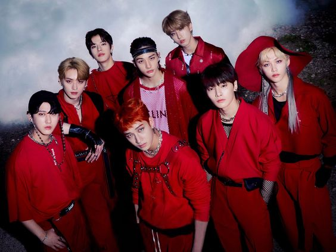

HTML 1
Actividad 2



izquierda a derecha: Changbin, Bangchan, I.N, Felix. Atrás izq: Lee Know, Seungmin, Hyunjin y Han.
Integrantes
Australiano, nació el 23 de octubre de 1997. Posición:Líder, productor, vocalista, bailarin, rapero. Pertenece a 3racha.
Lee Know
Coreano, nació el 25 de octubre de 1998. Posición: Bailarín, vocalista y rapero. Pertenece a Danceracha
Coreano, nació el 11 de agosto de 1999. Posición:Productor, vocalista, rapero. Pertenece a 3racha.
Coreano, nació el 20 de marzo del 2000. Posición:Bailarín, vocalista, rapero. Pertenece a Danceracha.
Coreano, nació el 14 de septiembre del 2000. Posición:Productor, vocalista, rapero. Pertenece a 3racha.
Australiano, nació el 15 de septiembre del 2000. Posición:Bailarín, rapero, vocalista. Pertenece a Danceracha.
Coreano, nació el 22 de septiembre de 2000. Posición:Vocalista Pertenece a Vocalracha.
Coreano, nació el 8 de febrero de 2001. Posición: Vocalista, maknae. Pertenece a Vocalracha.